| Aparincia |
Nombre |
Tecnica y Ataques |
| 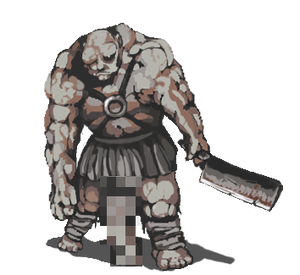 |
Guardian |
Se encuentran en toda la mazmorra , facil si sigues estas indicaciones atacar brazo, aguijon y segundo brazo, caera sin atacar, mas facil de mas personajes tengas, al de la ballesta atacar a los brazos y al guardian con armadura evitar. |
| 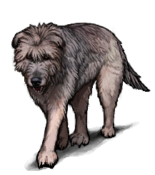 |
Perro |
Evitar a toda costa en la primera apricion , atacar en la cabeza. si son mas personejes que uno puede ser facil. |
| 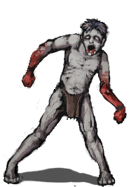 |
Ghoul |
Evitar , atacar a las piernas para que caiga , se puede usar nigromancia y sera tu aliado. |
 |
Maneba |
Evitar, atacar a la cabeza, se encuentran en las primeras zonas de la mazmorra. |
| 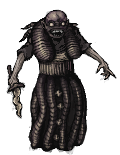 |
Bruja Negra |
Se encuentra en una trampa que hay en la primera zona , se puede evitar si solo sigues de largo , si la enfrentas que sean ataques a el torzo |
| 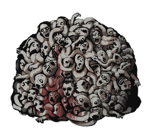 |
Masa De Carne |
Esta en una habitacion de la primera parte del juego , te pide que el des a la niña si se la das no te da nada a cambio, si le atacas no tiene forma de defenderse. |
| 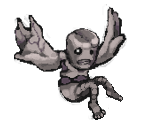 |
Cavegnome |
Evitar no te da nada por matarlos , si te quedas quito no te atacan, mueren de un golpe pero si fallas llama a mas aliados. |
| 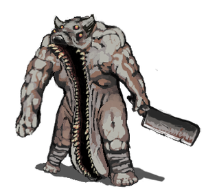 |
Guardian Moonless |
Rara vez aparece en las profundiades de la masmorra , evitar a toca costa , atacar a brazo y piernas. |
| 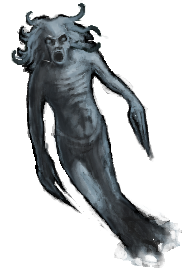 |
Miner Spectre |
Evitar a toda costa es imune a ataques fisicos solo a magicos , apertar hablidad y selecionar correr si no te queda de otra hacerlo hasta que puedas correr. |
| 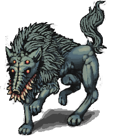 |
Moonless |
Darle 2 pedazos de carne podriada y sera tu aliado , tiene ataque lacerante. |
| 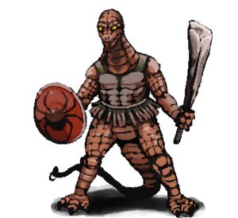 |
Lizerman |
Evitar a toda costa enemigo muy fuerte , atacar a el brazo y piernas luego cabeza, talvez suelte sus armas. |
| 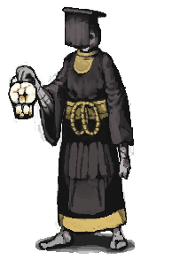 |
Priest |
Atacar al torzo siempre moriran muy rapido y sueltan muchos objetos. |
| 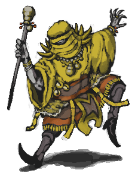 |
Mago amarillo |
No evitar correr hasta matarlo , atacar a la pierna para que no pueda bailar y no hacer daño. |
| 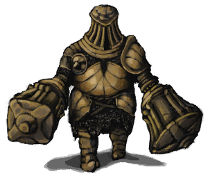 |
Iron Shakespeare |
esta en los primeros niveles no atacar correr direcatamente es muy fuerte. |
|
| 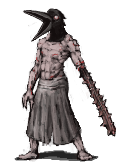 |
Crow Mauler |
Evitar, No dormir si te salta un mensaje sospechoso cuando le das a domir a una cama , como que sientes una presencia, y correr si ya esta en tu nivel, atacar al brazo y cabeza(creo). |
|
| 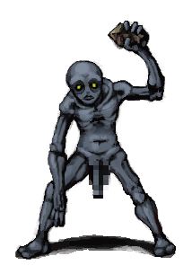 |
Cavedweller |
Enemigo debil , atacar al brazo de la pierna y luego torzo con la otra variante igual. |
|
| 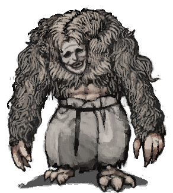 |
El señor de las moscas |
Esta en mahabre , intentar evitarlo , no se como se deba matar. |
|
| 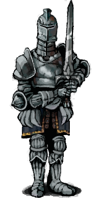 |
Antiguo Caballero |
Esta en los niveles 7 de mineria , torzo diracamente , evitar y la otra variante espirituo evitar tambien. |
|
| 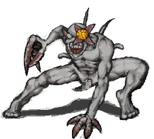 |
Night Lur |
Es ciego , podes pasar de el solo que no te toque , piernas y brazos. |
|
| 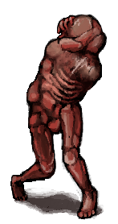 |
Molded |
Esta en el pasado de mahabre en el final del juego, torzo , o evitar son lentos. |
|
| 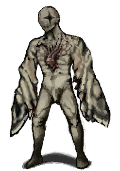 |
Angel Blanco |
Esta en mahabre evitar si se puede , no se cual sea su deblidad. |
|
| 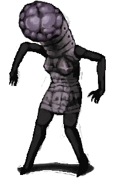 |
Mumbler |
Esta en mahabre evitar si se puede , no se cual sea su deblidad. |
|
| 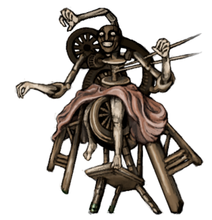 |
JEFE Skin Granny |
Jefe en pasado de mahabre , tiene un ataque que te saca la cara y se la pone , no tengo idea como se pelea contra eso. |
|
| 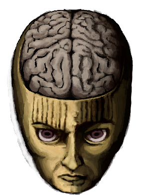 |
JEFE Valteil |
Tiene una gran debilidad ,dale para hablar con el y te dira preguntas si le contestas todas lo matas y sacas mucho daño por eso. |
|
| 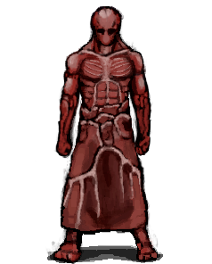 |
JEFE Tormented One |
tiene deblidad tienes que atacar a la rueda numero 2 y 3 en ese orden te dara turnos extra y pasara rapido a la otra forma , es fuerte. |
|
| 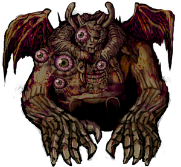 |
JEFE Goroth |
No se cual sea su debilidad |
|
| 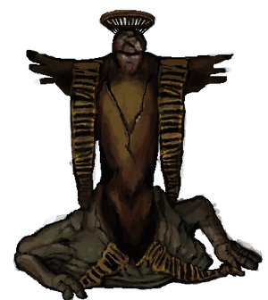 |
JEFE DiOS del miedo y el hambre |
en el final que le la niña se transforma , no se cual sea su debilidad extremadamente fuerte. |
|